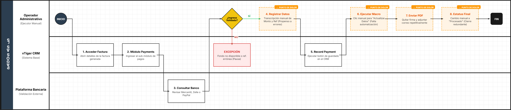
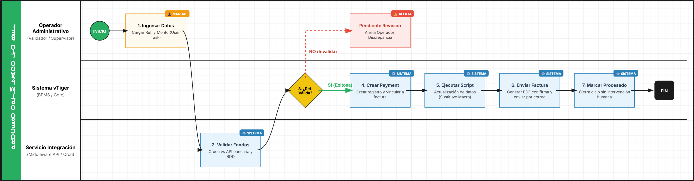

4.AS-IS (REGISTRO DE PAGOS) TO-BE
Entregable 1: Análisis del Proceso Actual (AS-IS)
1. Identificación y Alcance del Proceso
Esta sección establece el contexto técnico del flujo financiero dentro del ecosistema de gestión.
Campo | Contenido |
|---|---|
Nombre del Proceso | Registro de Pagos (Payment Record) y Conciliación Bancaria |
Objetivo del Proceso | Vincular financieramente una factura con el ingreso real de dinero para asegurar la conciliación |
Punto de Inicio | Apertura de factura generada (Inscripción, Arancel o Promoción) |
Punto de Fin | Cierre del ciclo administrativo con cambio de estatus a "Procesado" |
Documento Fuente | Manual 4: Registro de Pagos y Conciliación Bancaria |
2. Actores Involucrados (Lanes)
Actor (Lane) | Rol en el Proceso | Responsabilidades Clave |
|---|---|---|
Operador Administrativo | Ejecutor | Registro manual de datos financieros, ejecución de macros y envío de comprobantes |
vTiger CRM | Sistema Base | Almacenamiento de facturas, gestión de módulos de pagos y generación de PDF |
Plataforma Bancaria | Sistema Externo | Recepción del dinero (Mercantil, Zelle, PayPal) |
3. Detalle de Actividades y Flujo AS-IS
No. | Actor (Lane) | Tarea / Actividad (Task) | Sistemas Involucrados |
|---|---|---|---|
1 | Operador | Acceder a Detalles de la Factura seleccionada | vTiger CRM |
2 | Operador | Ingresar al sub-módulo "Payments" | vTiger CRM |
3 | Operador | Registrar datos: Monto, Referencia, Tipo, Estado y Fecha | vTiger CRM |
4 | Operador | Ejecutar acción "Record Payment" | vTiger CRM |
5 | Operador | Ejecutar Macro "Actualizar Datos" | vTiger CRM |
6 | Operador | Exportar y enviar Factura Física por email (sin firma) | Email / vTiger PDF |
7 | Operador | Actualizar estatus del Payment Record original a "Procesado" | vTiger CRM |
4. Reglas de Negocio y Puertas de Enlace (Gateways)
Puerta de Enlace 1: ¿Validación de ingreso de fondos?
- 🟢 Camino "SÍ" (Flujo de Continuidad):
- Criterio: El dinero figura en la plataforma receptora con el número de referencia exacto.
- Resultado: Se procede a marcar el estado como "Paid" (Pagado) y se registra el pago.
- 🔴 Camino "NO" (Flujo de Excepción):
- Criterio: La referencia no coincide o el fondo no está disponible.
- Resultado: El proceso se detiene hasta la verificación manual (Actividad implícita de control).
5. Identificación de Puntos de Dolor
Tras el análisis técnico, se identifican las siguientes oportunidades de mejora para la fase TO-BE:
- Entrada de datos manual: La transcripción manual de montos y números de referencia de Zelle/Mercantil a vTiger es propensa a errores humanos.
- Cierre de ciclo redundante: El operador debe volver manualmente al registro original para cambiar el estatus a "Procesado" después de haber enviado el correo, lo que genera riesgo de registros "abiertos" olvidados.
- Falta de automatización en Macros: La necesidad de hacer clic en "Macros > Run" de forma manual podría automatizarse mediante Workflows disparados por el cambio de estado de la factura.
- Dependencia de Intervención Humana en Envío: El proceso de quitar el "check de firma" y seleccionar el correo del cliente es un paso repetitivo que podría preconfigurarse en una plantilla de correo dinámica.

Entregable 2: Diseño del Proceso Optimizado (TO-BE)
1. Identificación y Alcance del Proceso (TO-BE)
Esta sección redefine el flujo de conciliación financiera mediante la automatización de tareas repetitivas.
Campo | Contenido |
|---|---|
Nombre del Proceso | Gestión Automatizada de Pagos y Conciliación vTiger |
Objetivo del Proceso | Automatizar la vinculación de pagos y la actualización de estados para eliminar el error humano y la redundancia. |
Punto de Inicio | Registro de pago detectado en la Plataforma Bancaria (API) o entrada manual de referencia. |
Punto de Fin | Factura pagada, cliente notificado automáticamente y registros actualizados en tiempo real. |
Documento Fuente | Análisis AS-IS: Registro de Pagos y Conciliación Bancaria. |
2. Actores Involucrados (Lanes)
En este modelo, el sistema asume gran parte de la carga operativa que antes recaía en el humano.
- Operador Administrativo (Validador): Su rol pasa de "transcriptor" a "supervisor", interviniendo solo en casos de discrepancia.
- Sistema vTiger (BPMS/Core): Ejecuta flujos de trabajo (Workflows) automáticos tras cambios de estado.
- Servicio de Integración (Middleware/Cron): Conecta las plataformas bancarias con el CRM para validar referencias.
3. Detalle de Actividades y Flujo TO-BE
No. | Actor | Tarea / Actividad | Tipo de Tarea (BPMN) |
|---|---|---|---|
1 | Operador | Ingresar número de referencia y monto | User Task |
2 | Sistema | Validar fondos contra API bancaria / Base de datos | Service Task |
3 | Sistema | ¿Referencia válida? (Gateway de Decisión) | Exclusive Gateway |
4 | Sistema | Crear "Payment Record" y vincular a Factura | Service Task |
5 | Sistema | Ejecutar script de actualización de datos (Sustituye Macro manual) | Script Task |
6 | Sistema | Generar PDF y enviar correo con firma digital al cliente | Service Task |
7 | Sistema | Cambiar estatus a "Procesado" automáticamente | Service Task |
4. Reglas de Negocio y Puertas de Enlace (Gateways)
Puerta de Enlace: ¿Validación Automática Exitosa?
- Camino "SÍ": Si el monto y la referencia coinciden con los datos bancarios, el sistema auto-procesa el pago sin intervención humana.
- Camino "NO": El sistema marca el registro como "Pendiente de Revisión" y dispara una alerta al Operador para verificación manual, evitando que el proceso se detenga indefinidamente.
5. Beneficios y Mejoras Implementadas (Justificación)
- Eliminación de Redundancia: Se elimina el paso manual de volver al registro original para cambiar el estatus a "Procesado"; el sistema lo hace tras el envío exitoso del correo.
- Reducción de Riesgos: Al automatizar la ejecución de macros y la validación de referencias, se reduce drásticamente la probabilidad de errores en la conciliación bancaria.
- Eficiencia en Comunicación: El envío de la factura con firma digital integrada se convierte en una tarea de fondo (background), liberando tiempo del operador.
